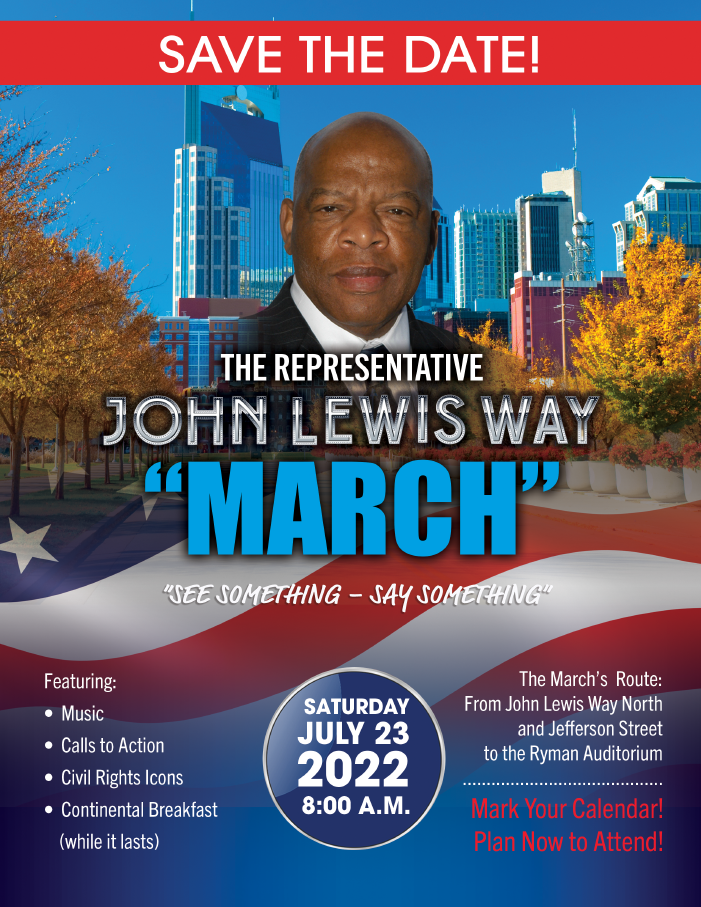

Charter Amendments/John Lewis Way March
Today, I received an email from a constituent. She shared her frustration about not knowing much about the charter amendments on the ballot. Since several of my colleagues have written about these amendments, my initial thought was not to inundate you all with the same information. However, following her email, I think it’s better to have information multiple times and not need it, than not have it at all. Below is a detailed explanation of the 4 amendments on the Aug. 4 ballot.
I support all four amendments and ask that you vote yes on the ratifications of all four. VOTE YES on the amendments.
What is a city charter?
A city charter or town charter (generically, municipal charter) is a legal document (charter) establishing a municipality such as a city or a town. It is the basic document that defines the organization, powers, functions, and essential procedures of the city government. It is comparable to the Constitution of the United States or a state’s constitution. The charter is, therefore, the most important legal document of any city.
What is the process for amending the charter?
Like a company’s charter which can only be amended by a vote of the board, a change to a city’s charter requires a vote by the citizens. According to Article 19 – Section 19.01 of the metro charter, the charter can be amended in 2 ways. The first is a resolution passed by 2/3 members of the council and the second is a petition signed by at least 10% of voters in the prior general election. Either method only places the proposed amendment on the ballot. The final decision on the change lies with the voters
Below is a detailed explanation of the 4 amendments on the Aug. 4 ballot. Thanks to CM Mendes’s blog for a detailed description of each amendment which is copied and shared below
Amendment #1
This amendment changes the process for amending the Metro Charter. Article 19 of the charter referenced above regulates the procedure for amending the charter. Unfortunately, the language is not very clear and as a result, has led to frivolous lawsuits that cost taxpayers money. The amendment is an attempt to bring certainty to the process and reduce litigation. Over the last several years, Metro has had to pay outside lawyers more than $1 million to fight lawsuits about amending the Charter. It’s time to fix this process. The changes include:
- Currently, it is difficult to determine how many signatures are needed to amend the Charter. The amendment would clarify that a petition must obtain signatures from 10% of the registered voters in the county within 90 days.
- Currently, there is substantial litigation over whether the language on petition forms is legally proper or not. The amendment would require approval of petition language (and any litigation about it) to happen before voters are asked to sign the petition.
- Currently, I think that some people try to game the timing of a petition for their advantage. The amendment would spell out the process timeline in more detail to hopefully avoid that gamesmanship.
Amendment #2
This would change the physical fitness qualifications for police officers. Currently, police officers must meet the same physical requirements for admission to the U.S. Army or Navy. The amendment would allow the requirements to be set by the civil service commission. The amendment also would modify U.S. citizenship requirements for the police department to be consistent with state law. The current Charter requires that officers must be U.S. citizens. If Amendment No. 2 passes, Metro would take advantage of a state law that allows lawful permanent residents (meaning, you have a green card) who have been honorably discharged from the U.S. military to be eligible to be police officers.
Both of these changes are intended to increase and diversify the group of people who are qualified to serve in the Metro Nashville Police Department.
Amendment #3
This is a needed technical amendment to update and modernize Charter references to the board of health and the Metro Public Health Department. The amendment would add an additional member to the Board of Health and update the qualifications for the members. The amendment would clarify the distinction between the Board of Health and the Department of Health to ensure oversight by the Board of Health. The amendment would remove the requirement that the Director of Health be a medical doctor and provide that if the director is not a medical doctor, then there must also be a Chief Medical Officer who is a medical doctor or doctor of osteopathy.
Amendment #4
This is a needed technical amendment to formally create the Nashville Department of Transportation (NDOT). Currently, the Metro Charter refers to a “Public Works” department. Due to restructuring to modernize the department, there is now NDOT. The Charter needs to be updated to formally create the department.
I hope you will vote YES on the ratification of these amendments. Click below to watch the mayor’s office PSA with me and other community leaders about the amendments.
Early voting across the county starts today. Click here for a sample ballot. You must indicate you want a primary ballot
2nd Annual Rep. John Lewis Way March
Join us this Saturday, July 23rd for the 2nd annual John Lewis Way march. We will gather at 7 am for breakfast, formal remarks, and march from Jefferson Street to the Ryman Auditorium. The late Rep. John Lewis spoke out and march for issues that he believed in. From desegregating the lunch counters to participating in freedom rides. This is our opportunity to march for issues of the day. For voting rights, for women’s rights, for civil rights, for our children, for education, and for housing. Join us, and bring a sign for the issues that matters to you. It is a march for our collective issues

Our speakers include Rev. Kelly Miller Smith Jr. and many others. There will be a marching band and performances by Mr. Will Davenport and Ms. Shonka Dukureh.
Ms. Shonka Dukureh
Ms. Dukureh, a graduate of Fisk University, who played Big Mama Thornton in the new Elvis movie will be performing at the end of March at the Ryman auditorium. You do not want to miss this mini-concert.
The Rep. John Lewis Way Scholarship
Beyond marching and highlighting the issues, the committee wanted to make a long-lasting impact. The committee has decided to award two scholarships annually. One to a student from Fisk University and the other to a student from American Baptist College (ABC). The net proceeds from the march will benefit the scholarship fund. You can donate to the fund at https://www.johnlewisway.com/the-rep-john-lewis-way-fund
As always, if you have any questions or concerns about anything we have discussed, please do not hesitate to reach out to me.